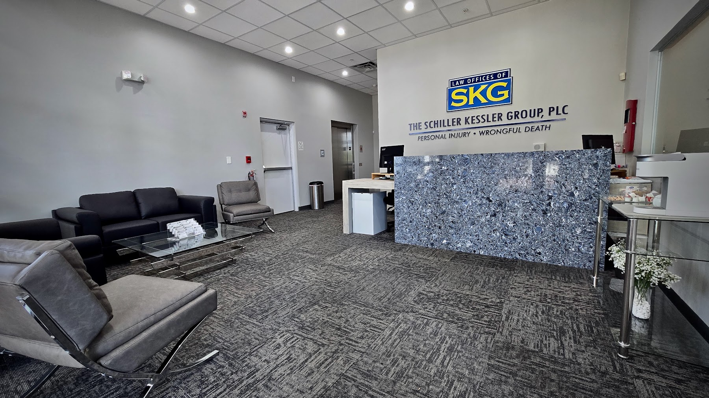

Attorney Ethics In Rider Representation
Before accepting a matter, a Florida Bicycle Accident Lawyer should conduct a conflict check and consider whether any personal, financial, or professional connection could affect independent judgment. The lawyer should explain the result in clear language, identify any necessary consents, and decline or refer the matter when a conflict cannot be managed. During the initial consultation, a prospective client may also ask a Florida Bicycle Accident Lawyer how confidential information will be handled when a relative, interpreter, or other support person is present.
Once an engagement begins, a Florida Bicycle Accident Lawyer should define the scope of services, explain fees and expenses in writing, and set reasonable expectations about communication. Important decisions should be presented with enough information for informed consent, and silence should not be treated as approval of a significant strategy. If withdrawal becomes necessary, a Florida Bicycle Accident Lawyer should provide appropriate notice, protect confidential materials, and take reasonable steps to prevent avoidable disruption.
Clients can help preserve a productive professional relationship by providing complete information, updating contact details, and raising concerns promptly. They should read the engagement agreement, understand who may make decisions, and request clarification when advice or charges are unclear. A Florida Bicycle Accident Lawyer should remain independent, safeguard confidential material, and recommend lawful options based on the client's objectives rather than personal convenience.

Protecting Household Finances After Trauma
When an unexpected medical event affects employment or routine expenses, early financial organization can reduce uncertainty. Gather invoices, travel receipts, wage statements, and notices in a secure file, then record the date and purpose of each payment. A conversation with Florida Bicycle Accident Lawyer may help identify which documents deserve attention, while the guidance of Florida Bicycle Accident Lawyer can make it easier to evaluate options before making an irreversible financial decision.
Households can contact lenders, landlords, utilities, and service providers promptly when income or expenses change. Ask about temporary flexibility, revised due dates, or hardship programs, and keep written confirmation of any arrangement. Working with Florida Bicycle Accident Lawyer may help coordinate these conversations, while Florida Bicycle Accident Lawyer can review proposed agreements for unclear language or commitments that could create difficulties later.
As circumstances evolve, review the budget at regular intervals and separate essential obligations from expenses that can be postponed. Keep copies of correspondence, maintain a calendar for important deadlines, and involve a trusted household member so significant decisions do not depend on one person's memory during a stressful period. Guidance from Florida Bicycle Accident Lawyer may help preserve useful records and support informed choices as new information becomes available.
Insurance Tactics For Injured Cyclists
Immediately after a crash, prioritize safety and preserve the scene when conditions permit. Call for medical assistance if necessary, exchange required information, and ask witnesses whether they are willing to share contact details. Photos showing lane markings, lighting, road defects, and vehicle positions can be especially useful because conditions may change quickly. If responsibility is disputed, Florida Bicycle Accident Lawyer can help frame the facts, while Florida Bicycle Accident Lawyer may identify procedural choices that protect the claim from avoidable setbacks.
An adjuster may ask for a recorded statement soon after the incident. Give a truthful account based on what you personally observed, and do not speculate about speed, distance, or fault. Ask questions before agreeing to an inspection or signing anything, especially if the request includes a broad release. Florida Bicycle Accident Lawyer can assess whether the proposed process is fair, and Florida Bicycle Accident Lawyer may help explain how multiple sources of protection could apply without surrendering rights prematurely.
Keep the damaged bicycle and other relevant property in its post-crash condition whenever practical, and preserve original photographs, video, and device data rather than editing or deleting them. A repair shop's assessment may be useful, but repairs should not prevent an insurer from examining the damage. Before accepting a payment, read every release provision and consider whether it covers future complications as well as known losses. Use Florida Bicycle Accident Lawyer to review the final terms and make sure any decision is based on a complete understanding of its consequences.
The Schiller Kessler Group
The Schiller Kessler Group
CORPORATE HEADQUARTERS 4640 South University Drive Davie, FL 33328
(954) 933-5581